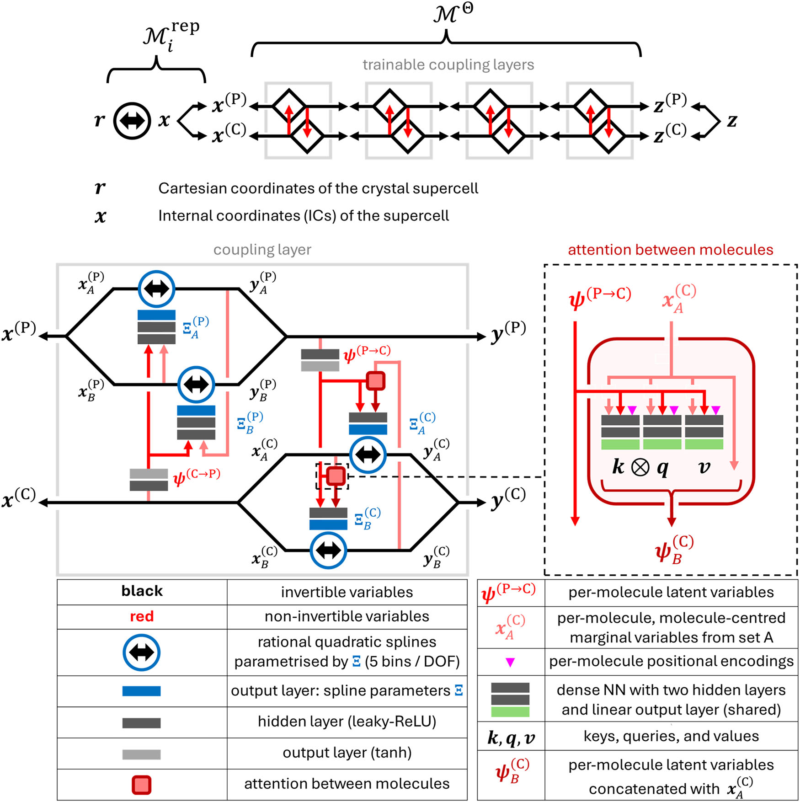
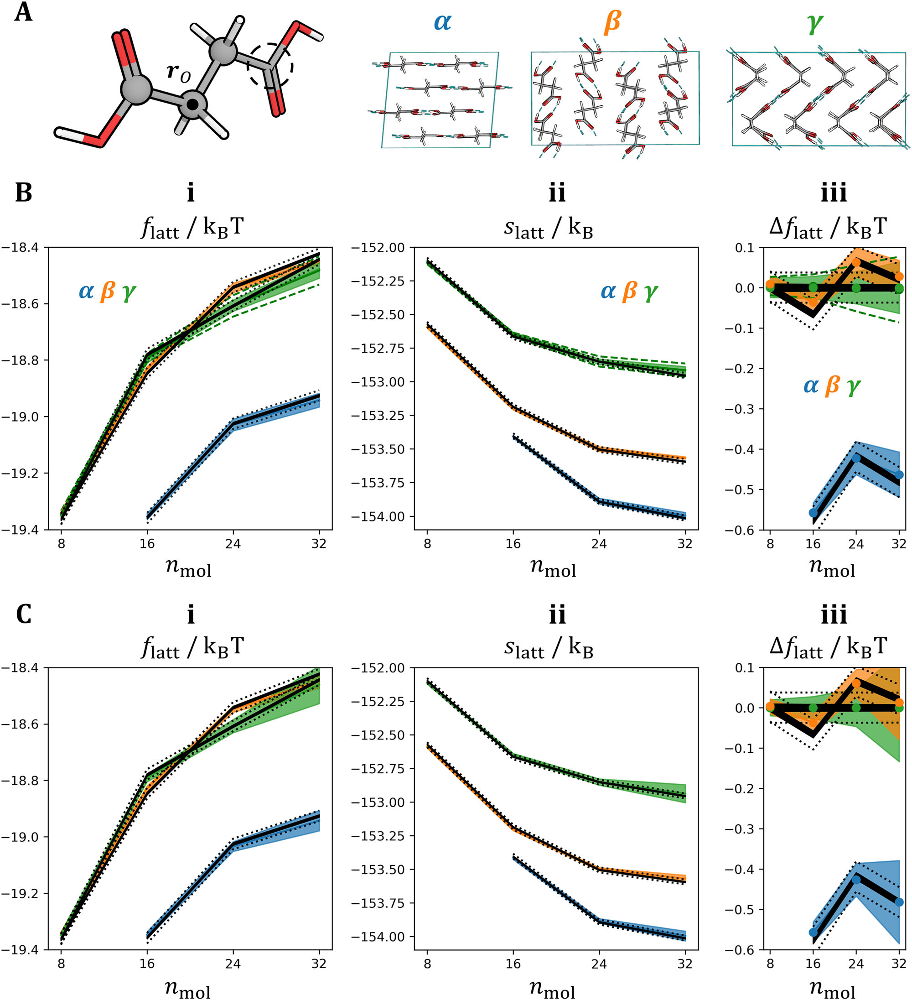
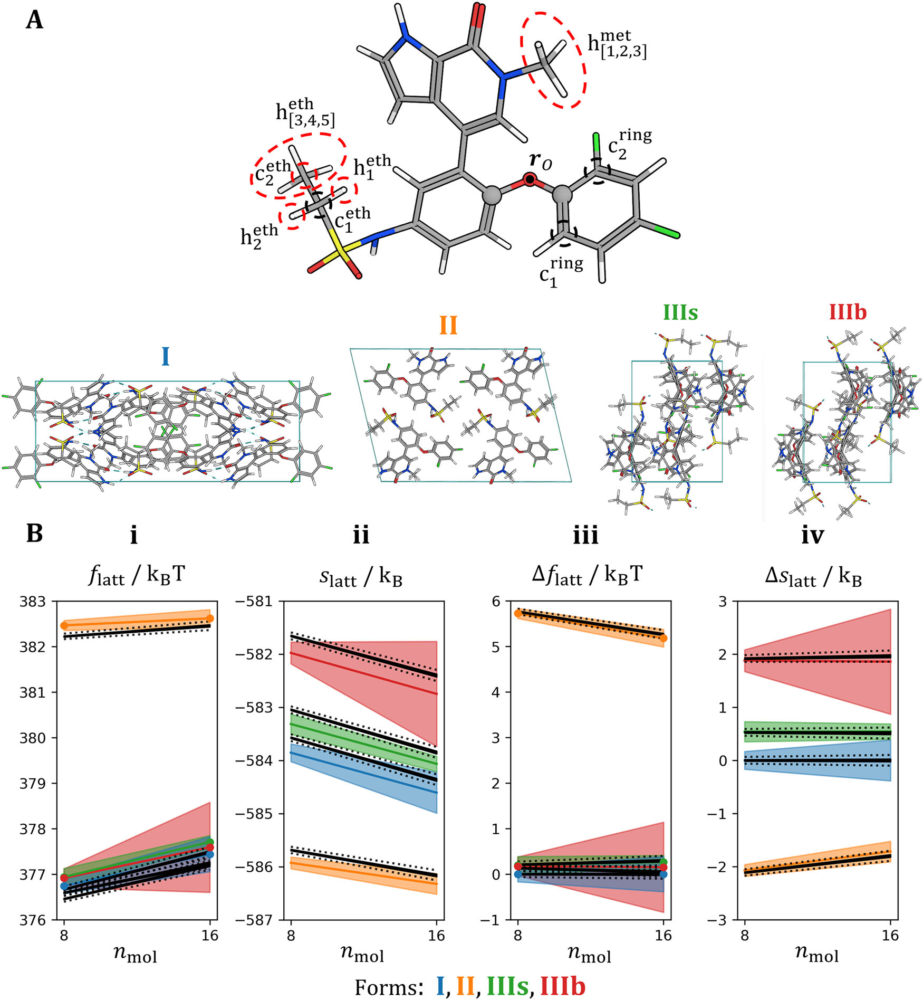
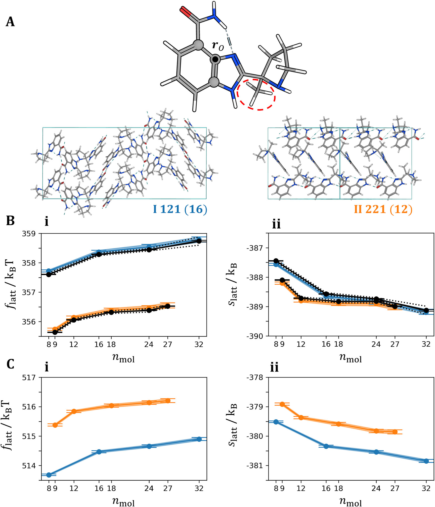
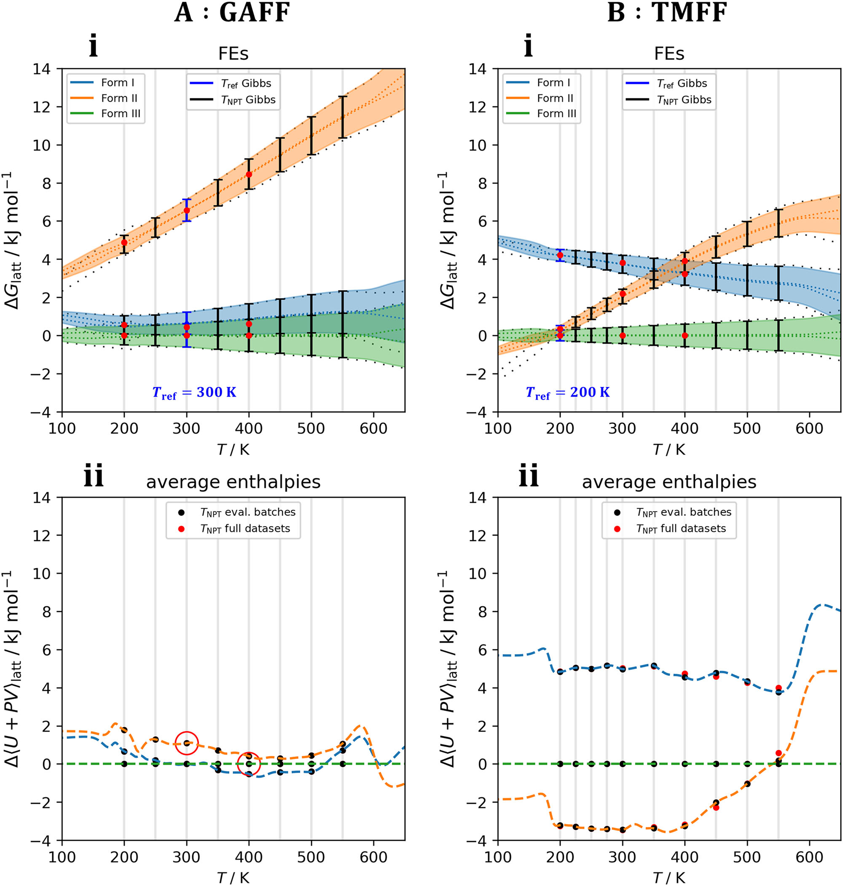

用可逆生成模型计算晶体自由能：把普通 MD 接到多晶型稳定性排序
论文原文 ↗原文：Edgar Olehnovics、Yifei Michelle Liu、Nada Mehio、Ahmad Y. Sheikh、Michael R. Shirts、Matteo Salvalaglio，Lattice free energies of molecular crystals using normalizing flow，npj Computational Materials，2026 年 10 月 27 日。论文｜｜代码 FEcrys｜数据
同一个有机分子可以排出不同晶型。计算晶体结构预测往往会给出许多候选，而实际温度下哪一种更稳定，要比较自由能：既看分子之间相互作用的能量，也看晶体振动、分子转动和构象变化所贡献的熵。对柔性药物分子，后面这部分足以改变排序。
已有的爱因斯坦晶体法（Einstein crystal method，ECM）能计算这些非谐自由能。它先把真实晶体用一系列逐渐改变相互作用的中间体系，连接到自由能可以解析求出的参考晶体；每一个中间体系都要另外采样。本文的 ECM 比较中，丁二酸和 Mivebresib 使用了 28 个中间状态，Veliparib 使用 33 个或更多。当候选晶型有几十、上百种时，这条路线的开销很大。
作者改变了“怎样接到参考体系”这一步：从每个晶型的普通分子动力学轨迹学习一个可逆坐标变换，再用严格的统计重加权求自由能。 因此，计算对象仍然是力场定义的晶体热平衡分布，却可以省去为每个晶型逐一模拟一长串炼金中间态的工作。
一、为什么学一个生成模型，就能求自由能
先看一个晶型在固定温度和体积下的平衡分布。分子动力学（MD）给出原子坐标样本，低势能构型较常出现，但一个晶型的自由能取决于整个构型空间的统计权重。这个权重的总和就是配分函数；常规 MD 会按归一化后的概率走动，并不直接给出配分函数的数值。
这里引入的 normalizing flow，归一化流，是一串一一对应、可逆的坐标变换。作者让它把晶体构型变成一个简单均匀分布中的坐标，也可以反过来：从均匀分布抽样，再变回一个晶体构型。
可逆性有一个关键用途：变换在每个位置把体积放大或缩小了多少，可以通过雅可比行列式精确计算。因此，模型可以对每个构型给出有明确归一化常数的概率密度。若用 $M_i$ 表示把晶型 $i$ 的原子坐标 $r$ 变到参考坐标的映射，模型密度为
$$ q_i(r)=p_0\!\left(M_i(r)\right)\left|\det\frac{\partial M_i}{\partial r}\right|. $$
其中 $p_0$ 是已知的参考均匀分布。训练负责让 $q_i$ 接近 MD 所采样的真实平衡分布；随后把模型密度与原力场能量放进自由能估计器，便能求出自由能。
作者采用的估计器叫 Bennett acceptance ratio，BAR。它联合利用两组分布的样本，按每个样本在两组分布下的相对权重，求两者的自由能差。在本文中，一组来自真实晶体 MD，另一组从均匀参考分布经模型映射得到，所以称为 targeted BAR，tBAR，带映射的 BAR。模型让两组构型分布充分重叠，BAR 则根据已知密度和力场能量完成重加权。每个晶型得到自己的绝对构型自由能后，做差即可排序。
这使机器学习与统计力学形成清楚的分工：生成模型学习怎样高效连接分布，物理势能和重加权公式决定最终自由能。
二、从一条晶体轨迹到自由能，实际怎样走
1. 先把晶体的运动写成容易学习的坐标
以一盒包含多个 Mivebresib 分子的晶体超胞为例。作者先在给定温压下进行 MD 平衡，让晶胞的长度和角度适应温度，再为固定晶胞下的自由能比较收集 NVT 轨迹。每个样本都是整个超胞的一套原子坐标。
把这些坐标直接交给网络，分子整体位移、整体转动与内部变形会混在一起。作者因此先做一层确定的可逆表示变换，把运动拆开：
- 分子内部构象：用键长、键角和二面角描述，保留柔性基团的转动。
- 分子整体朝向：用三个转动自由度表示，并根据轨迹中的平均朝向设置合适的坐标区间。
- 分子在晶格中的位置：单独表示各分子的平移，并移去整个超胞一起平移的三个自由度。
这些量分别进入图1中的构象/转动通道 $x^{(C)}$ 和位置通道 $x^{(P)}$。表示层由 MD 数据中的取值范围等信息初始化，之后交给可训练的流模型。它保留重建原子坐标所需的信息，便于准确计算整个变换的概率密度。

图1｜原文 Figure 1。上方是原子坐标到参考分布的可逆变换；下方展开一个耦合层。两条通道分别描述分子位置与构象/朝向，红色连接让它们交换信息，右侧注意力块进一步联系不同分子的运动。
2. 共享分子内变换，再学分子之间怎样关联
流模型通常串联四个 spline-coupling layer，样条耦合层。可以把它理解为：每次先保留一部分变量，根据这部分信息，确定另一部分变量怎样做可逆的非线性拉伸；再交换两部分的角色。连续做几层，便能把复杂的晶体分布整理成简单分布。
这里的结构设计针对分子晶体的重复性：一个超胞中的分子化学组成相同，因此分子内部变量使用共享的网络参数，计算也能按分子并行进行。这样，超胞增加分子时，不必为每个分子重新配置一套完整网络。
同时，分子的构象和朝向会受周围分子影响。作者用两个信息交换通道，把整体位置传给分子内部变量，也把分子内部变量汇总给位置变量；再加入分子间注意力，让一个分子的变换能参考其他分子的状态。对 Mivebresib 这种含多个柔性基团的分子，学习这些相关运动尤其重要。其较复杂的结果采用了四个注意力头。
3. 训练学习构型分布，计算时再接回原力场
训练数据按 4∶1 划分为训练集和验证集。模型通过最大化训练构型的平均对数概率密度，学习“这个晶型在热平衡下通常怎样运动”。
计算自由能时，作者取验证集中的 5000 个真实 MD 样本，再从模型抽取 5000 个新构型。真实样本的力场势能已经在 MD 中记录；新构型则送回原力场计算势能。两组样本都可以获得模型概率密度，于是 tBAR 能把它们连接起来，输出自由能及统计误差。论文还在训练过程中反复计算并汇总自由能估计，使结果收敛。
顺着这条链看，真实输入是晶型结构及其 MD 构型，模型学到的是该晶型的热运动分布，最终输出则是可以彼此比较的晶格自由能。省下的计算主要来自：每个晶型只需采样真实物理体系，再对生成构型做能量计算。
三、结果：复杂分子晶体的自由能，能否保留 ECM 的精度
从丁二酸到柔性药物分子，非谐排序都能接上
作者先用丁二酸的三个晶型检查方法。图2同时比较了绝对自由能、熵与晶型之间的自由能差；彩色流模型结果和黑色 ECM 结果整体一致。熵改变了 β、γ 两种晶型的相对稳定性，说明排序中确实需要把热运动算进去。
这个体系还测试了“一套模型处理多个晶型”：为不同晶型保留各自的表示层，再把晶型编号输入同一组可训练耦合层。它在相同超胞分子数下同时学习两种或三种晶型，得到的自由能差仍与逐晶型训练及 ECM 结果相符。这里共享的是同一种分子不同堆积方式的分布学习。

图2｜原文 Figure 2。A 是分子与三种堆积；B 为分别训练的结果，C 为多晶型共享模型。每行从左到右是自由能、熵和相对自由能；彩色结果与黑色 ECM 曲线接近，C 显示共享模型保留了主要排序。
更严格的检验来自 Mivebresib。它有 51 个原子，多个二面角在 300 K 下发生构象变化；晶型 III 在计算中又形成了两种不同的构象/堆积状态，作者将它们分别记为 IIIₛ 和 IIIᵦ。
在包含 8 或 16 个分子的超胞中，模型需要同时学习分子内多峰构象和分子间关联。图4中，流模型与 ECM 给出的相对自由能仍有良好的一致性：在该 GAFF 计算设置下，晶型 II 比其他堆积的自由能高约 5 个 $k_BT$；IIIᵦ 的熵贡献又明显区别于其他堆积。模型从这类复杂热运动分布中得到的自由能，可以继续用于晶型比较。整项工作将计算推进到了约 3000 个自由度 的分子晶体超胞。

图4｜原文 Figure 4。A 标出分子的柔性基团及四种堆积；B 中黑色为 ECM，彩色为流模型。第三、第四列分别显示相对自由能与熵差，可看到晶型 II 的自由能较高，以及不同堆积的熵贡献差异。
同一估计方法还能比较不同势能描述下的晶型排序
Veliparib 有两种晶型，实验上室温时晶型 I 更稳定。图3先使用通用有机力场 GAFF，再换成面向该分子构建的定制力场 TMFF。GAFF 下，流模型与 ECM 一致地给出晶型 II 更稳定、差值约 $2k_BT$；TMFF 下，流模型则给出晶型 I 更稳定、差值约 $1.5k_BT$，与实验的稳定性次序一致。
这个比较展示了自由能计算的实际作用：当输入的相互作用能改变时，方法能把能量与熵共同反映到排序中。对晶型筛选，选择怎样的势能描述与高效计算热力学量可以在同一流程中研究。

图3｜原文 Figure 3。A 为 Veliparib 与两种晶型；B 使用 GAFF，C 使用定制力场 TMFF。B 中橙色晶型 II 的自由能较低，C 中蓝色晶型 I 较低，显示相互作用模型如何改变稳定性排序。
从一个参考温度出发，连接整段温度下的自由能
固定体积时比较的是 Helmholtz 自由能 $F$。若要在给定压力下比较晶型，还需要包含晶胞形状与体积变化，求 Gibbs 自由能 $G$。作者把晶胞矩阵的六个自由度并入位置通道，并在统计重加权时使用相应的压力和体积项，得到 NPT 版本的模型。
Mivebresib 的温度比较采用了一个节省重复计算的组合：先在参考温度，用流模型确定不同晶型之间的 Gibbs 自由能差；再对每一种晶型，在多个温度分别运行普通 NPT MD。相邻温度的构型分布有重叠，就能用 MBAR，多状态 BAR，连出该晶型自由能随温度的变化。把这条温度曲线加到参考温度的晶型间差值上，各晶型就进入同一张稳定性图。
这里，跨温度的势能函数相同，变化的是温度引入的统计权重，因此可以复用轨迹中已经记录的能量。流模型负责难以直接连接的不同晶型，MBAR 则负责连接相邻温度。

图5｜原文 Figure 5。上排是相对晶型 III 的 Gibbs 自由能，蓝色误差棒标出流模型计算的参考温度，其他温度由 MD 与 MBAR 连接；下排是相应焓差。左、右分别采用 GAFF 和 TMFF，曲线交叉位置与稳定性次序随势能描述改变。
四、值得关注的增量：让真实晶体 MD 更直接地服务自由能筛选
这篇论文把基于流的自由能方法，从较简单的晶体和构象问题推进到具有多峰内部构象、复杂分子间关联的分子晶体。针对晶体结构设计的可逆表示、分子间参数共享和关联学习，使模型既保留可计算的概率密度，又能处理约 3000 个自由度；多晶型共享训练与 NPT 扩展，进一步把它接到晶型景观与温度依赖的稳定性比较。
在本研究的实现和所测体系中，作者估计 ECM 获得一次自由能结果平均需要约 2.5 倍 于重加权生成模型的计算时间，优势主要出现在较小超胞中的中、大分子。Veliparib 与 Mivebresib 的 ECM 中间态为保持稳定还使用了更小的 MD 时间步长，这也是计算成本差异的来源。更普遍的节省来自减少力场求值次数：已有真实 MD 轨迹可以继续复用，新增计算集中在模型生成的构型上。
对计算材料研究，最有吸引力的思路是：把“为每种候选专门设计一条自由能路径”，转化为“用真实轨迹学习一个能与参考分布连接的映射”。这样，生成模型进入材料设计的位置，是帮助计算熵与自由能，让大量结构候选能够在实际温度条件下继续比较。作者公开的 FEcrys 代码及示例笔记本，也为把这条路线接到分子晶体计算中提供了实现入口。
原始摘要完整中文翻译
准确的自由能计算对于预测复杂分子材料的热力学稳定性至关重要，例如药物分子的多晶型晶体景观。爱因斯坦晶体法（ECM）等经典方法能够提供基准级精度，但对于晶体结构预测产生的较大晶体景观，其计算成本高得难以承受。在这里，我们基于靶向自由能微扰，建立了一套可扩展的分子晶体非谐自由能排序框架。具体而言，我们采用靶向 Bennett 接受率（tBAR）方法，其中的靶向步骤使用通过归一化流学习得到的双射映射。通过训练，这些映射能够在所关注晶体的玻尔兹曼系综与解析参考态之间，对超胞构型进行解析变换。精确的似然进而使我们能够直接从真实物理体系的分子动力学数据中获得可靠的晶格自由能估计，而无需进行炼金采样。该方法能够处理自由度达到 $3\times10^3$ 的超胞，并允许使用单个模型进行多状态训练。对丁二酸、Veliparib 和 Mivebresib 的验证表明，该方法与 ECM 高度一致，而计算成本显著降低。通过结合统计力学与机器学习的表达能力，这一方法推动非谐自由能计算走向自动化，并使其更适合分子与材料设计中的高通量应用。